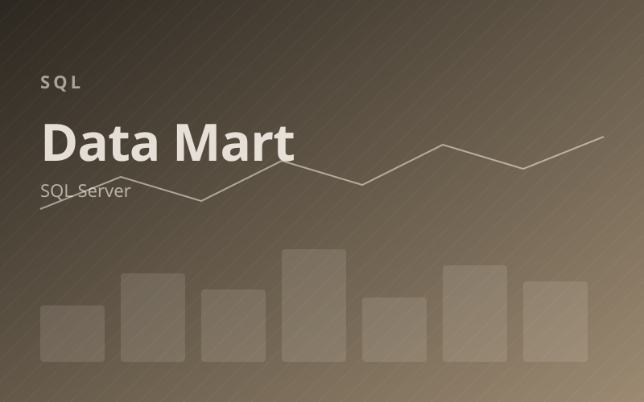
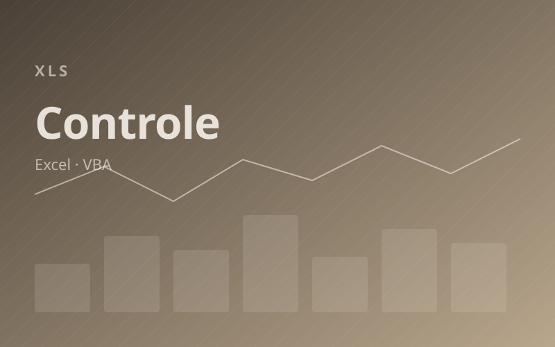
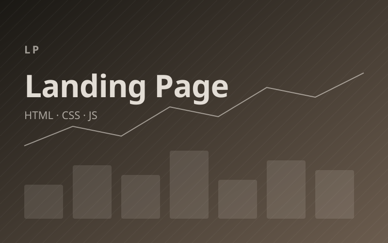
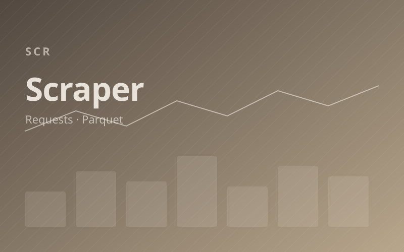
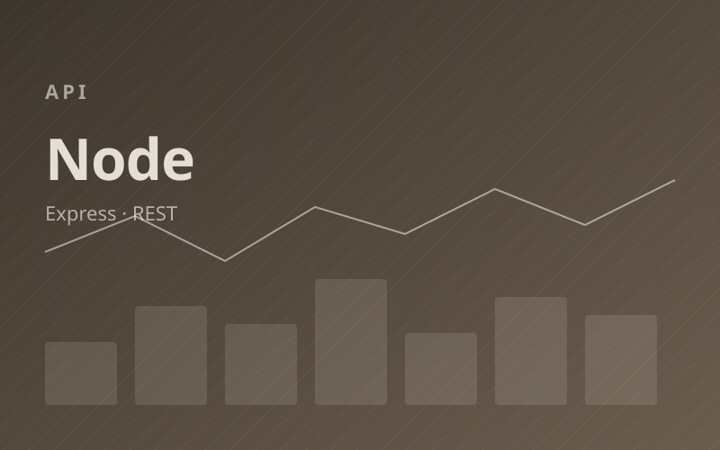

Destaque
SQL · Profissional
Modelagem de Data Mart
Esquema estrela para consumo em Power BI com views e índices otimizados.
Categoria
Projetos multidisciplinares envolvendo SQL, Excel avançado, front-end e experimentos diversos.
Soluções complementares entregues em projetos reais.

DestaqueEsquema estrela para consumo em Power BI com views e índices otimizados.

Dashboard em Excel com Power Query, fórmulas dinâmicas e macros VBA.
Experimentos de estudo em tecnologias diversas.

Página estática focada em performance, SEO e acessibilidade.

Coletor resiliente com retry, cache local e exportação para Parquet.

API REST simples com Express para consumo de dados locais.